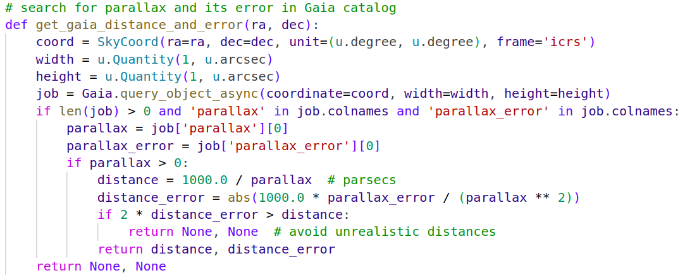

Open Clusters
Group Members:
汪子杨(ZiYang Wang), 杨鸿畅(HongChang Yang)
王源浩(YuanHao Wang), 阙佳(Jia Que)
1 Prepare
1.1 Data
1.2 Reduction
1.3 Photometry
1.1 Data
- calibration frames:
- bias
- darks
- flats: g,i,r
- cluster NGC 7086:
- gSDSS 30s/120s
- iSDSS 4s/40s
- rSDSS 10s/90s
1.2 Reduction
using AstroImageJ
-
master bias, master darks, master flats
-
reduced:
- gSDSS 30s/120s_red
- iSDSS 4s/40s_red
- rSDSS 10s/90s_red
1.3 Photometry
- select the same star for the short/long exposure time frames
- select the brighter stars in the short exposure time frames
- select the fainter stars in the long exposure time frames
1.3 Photometry
- select the same star for the short/long exposure time frames
(the $g\text{-}r$ in H-R diagram requests the star in $g$ and $r$ filter is the same)
- select the brighter stars in the short exposure time frames
- select the fainter stars in the long exposure time frames
1.3 Photometry
- select the same star for the short/long exposure time frames
(the $g\text{-}r$ in H-R diagram requests the star in $g$ and $r$ filter is the same)
- select the brighter stars in the short exposure time frames
(to contain the gaints in H-R diagram)
- select the fainter stars in the long exposure time frames
1.3 Photometry
- select the same star for the short/long exposure time frames
(the $g\text{-}r$ in H-R diagram requests the star in $g$ and $r$ filter is the same)
- select the brighter stars in the short exposure time frames
(to contain the gaints in H-R diagram)
- select the fainter stars in the long exposure time frames
(to contain the main sequence stars in H-R diagram)
2 Data Processing
2.1 Flux $\rightarrow m_{\text{inst}}$
2.2 $m_{\text{inst}}\rightarrow m_{\text{app}}$
2.3 $m_{\text{app}}\rightarrow m_{\text{abs}}$
2.4 The First Edition H-R Diagram
2.1 Flux $\rightarrow m_{\text{inst}}$: theory
$$ m_{\text{inst}}=-2.5\log_{10}\left(\frac{F}{t_{\text{exp}}}\right) $$
$$ \sigma_{m_{\text{inst}}}=\sqrt{\left(\frac{-2.5}{\ln 10}\right)^2\left(\frac{\sigma_{F}}{F}\right)^2} $$
the flux of target $F$
the exposure time $t_{\text{exp}}$
the error of flux $\sigma_{F}$
2.1 Flux $\rightarrow m_{\text{inst}}$: processing
$$ m_{\text{inst}}=-2.5\log_{10}\left(\frac{F}{t_{\text{exp}}}\right) $$
$$ \sigma_{m_{\text{inst}}}=\sqrt{\left(\frac{-2.5}{\ln 10}\right)^2\left(\frac{\sigma_{F}}{F}\right)^2} $$
the python code to achieve:
2.2 $m_{\text{inst}}\rightarrow m_{\text{app}}$: theory
theory
$$ m_{\text{app}catalog}=m_{\text{inst}}+m_{\text{zp}} $$
download the apparent magnitudes from Pan-STARRS Catalog
crossmatch $m_{\text{app}catalog}$ and $m_{\text{inst}}$ to get the $m_{\text{zp}}$
$$ m_{\text{app}my}=m_{\text{inst}}+m_{\text{zp}} $$
2.2 $m_{\text{inst}}\rightarrow m_{\text{app}}$: processing
1.compare the coordinate (RA, Dec) of star to match the coordinate in catalog table PS-7_26_2025.csv

get the match apparent magnitudes in 3 filters.
2.2 $m_{\text{inst}}\rightarrow m_{\text{app}}$: processing
2.crossmatch $m_{\text{app}catalog}$ and $m_{\text{inst}}$ to get the $m_{\text{zp}}$
(the blue line above is the difference between two, the x-axis represents the index)
2.2 $m_{\text{inst}}\rightarrow m_{\text{app}}$: processing
3.convert $m_{\text{inst}}$ to $m_{\text{app}my}$
2.3 $m_{\text{app}}\rightarrow m_{\text{abs}}$: theory
theory
$$ M=m-5\log_{10}(d)+5 $$ $$ \sigma_{M}=\sqrt{\sigma_m^2+(\frac{5}{\ln 10})^2(\frac{\sigma_d}{d})^2} $$
the distance of target $d$
the apparent magnitude of target $m$
the error of apparent/instrumental magnitude $\sigma_{m}$
the error of distance $\sigma_{d}$
2.3 $m_{\text{app}}\rightarrow m_{\text{abs}}$: processing
1.get distance from gaia catalog

2.3 $m_{\text{app}}\rightarrow m_{\text{abs}}$: processing
1.get distance from gaia catalog
change parallax(mas) $ ϖ $ to distance(pc) $d$
$$ d = \frac{1000}{ϖ} $$
$$ \sigma_d = \sqrt{(\frac{-1000}{ϖ^2})^2\sigma_{ϖ}^2} $$
2.3 $m_{\text{app}}\rightarrow m_{\text{abs}}$: processing
2.convert $m_{\text{app}my}$ to $m_{\text{abs}}$
$$ M=m-5\log_{10}(d)+5 $$ $$ \sigma_{M}=\sqrt{\sigma_m^2+(\frac{5}{\ln 10})^2(\frac{\sigma_d}{d})^2} $$
2.4 The First Edition H-R Diagram
we have:
-
absolute magnitudes in $g,i,r$ filters
-
color index:
- $g\text{-}r$, $g\text{-}i$, $r\text{-}i$
- the error of $\text{f1-f2}$ is $$ \sigma_{\text{f1-f2}}=\sqrt{\sigma_{\text{f1}}^2+\sigma_{\text{f2}}^2} $$
2.4 The First Edition H-R Diagram
plot $g$ vs $g\text{-}r$, $g$ vs $g\text{-}i$ and $r$ vs $r\text{-}i$
3 Further Analysis
3.1 Identify
3.2 Interstellar Extinction
3.3 Isochrone
3.1 Identify: theory
parameters to consider:
-
distance/parallax
-
proper motion
3.1 Identify: theory
parameters to consider:
- distance/parallax
(stars gather as a group)
- proper motion
3.1 Identify: theory
parameters to consider:
- distance/parallax
(stars gather as a group)
- proper motion
(group move together)
3.1 Identify: processing
1.get the proper motion from gaia catalog
3.1 Identify: processing
2.consider distance, proper motion, proper motion in RA, proper motion in Dec at the same time
3.1 Identify: processing
3.compare with the raw H-R diagram
3.1 Identify: processing
3.compare with the raw H-R diagram
3.2 Interstellar Extinction: theory
theory
- get the $E(B\text{-}V)$ of each star from catalog file
- fix the magnitudes in 3 filters $$ A=C\cdot E(B\text{-}V) $$ $$ m_0=m_{\text{obs}}-A $$
3.2 Interstellar Extinction: processing
1.compare the coordinate of star to the coordinates in catalog file Extinction_values_NGC7086.csv
get the match value of $E(B\text{-}V)$ and its error.
3.2 Interstellar Extinction: processing
2.calculate the interstellar extinction and reduce it
3.2 Interstellar Extinction: processing
3.compare with the H-R diagram before considering interstellar extinction
3.2 Interstellar Extinction: processing
3.compare with the H-R diagram before considering interstellar extinction

3.3 Isochrone
- use the data model from a Bag of Stellar Tracks and Isochrones
3.3 Isochrone
- use the data model from a Bag of Stellar Tracks and Isochrones
3.3 Isochrone
- use the data model from a Bag of Stellar Tracks and Isochrones
3.3 Isochrone
- use the data model from a Bag of Stellar Tracks and Isochrones